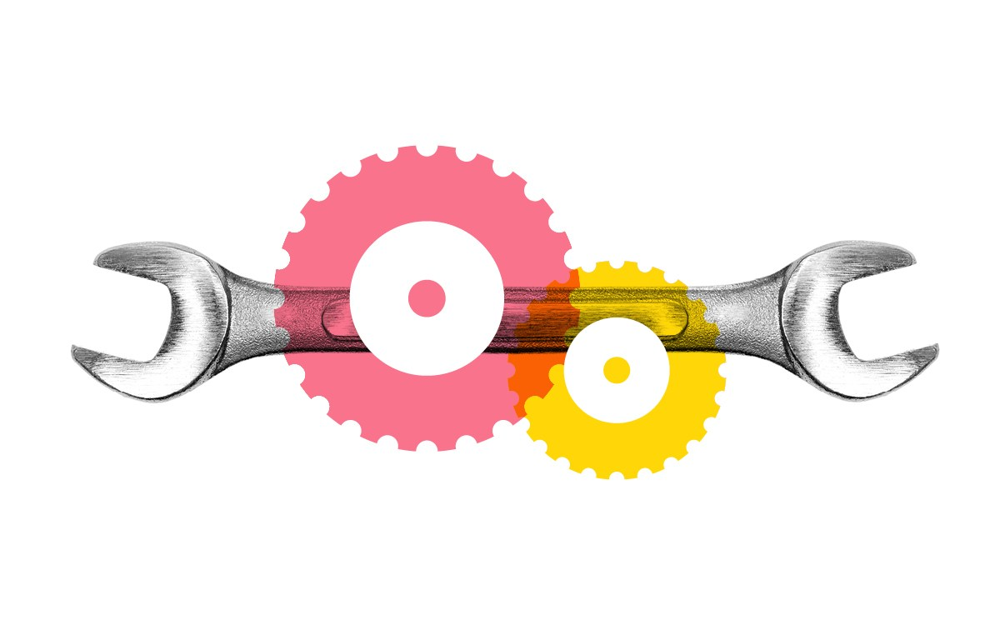
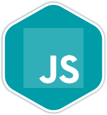

Web development is also known as by website development (to make you understand in simpler term.)
So, Web development largely denotes to the tasks associated with developing websites for hosting via intranet and internet.
The web development process comprises of Web design, Web content and network configuration amongst other tasks.
Web development is the coding or programming that enables website functionality, per the owner's requirements. It mainly deals with the non-design aspect of building websites, which includes coding and writing markup.
Web development ranges from creating plain text pages to complex web-based applications, social network applications and electronic business applications.
The web development hierarchy is as follows:
Client-side coding
Server-side coding
Database technology
TYPES OF DEVELOPERS
Front-end development:
Where you work on building dynamic interfaces. You majorly need to know HTML5, CSS3, Jquery, Bootstrap. If you know advance frameworks like Angular and React.js
You will have more and better opportunities in front-end development.
Back-end development:
Where you work on making websites more functional. You need to know a server-side programming language like PHP, Ruby, Python, C#, etc and related frameworks. For instance, if you’re using PHP, you would need to learn Laravel or other PHP-based framework.

Full-stack development:
Where you work on both—front-end and back-end. So you need to technologies used across both. You need to front-end technologies as well as back-end technologies. Since full-stack developers are required to have more skill than front-end and back-end developers, these are also better paid than front-end and back-end developers.
Powerful Javascript

Commercially, JavaScript is the only language that is preferred for both front-end and back-end development. This wasn’t the case earlier. if you wanted to work on back-end and front-end ( essentially become a full-stack developer), you were required to learn a server-side programming language in addition to JavaScript. Well, that’s not there any more. so if you learn JavaScript, you would become a full-stack developer sooner.